Transporte Quântico em Redes Multi-hierárquicas
Orientador: Dr. Mircea Daniel Galiceanu
Universidade Federal do Amazonas
Pró-Reitoria de Pesquisa e Pós-Graduação
Programa de Pós-Graduação em Física
Roteiro
- Motivação
- Grafos e Matriz Laplaciana
- Rede Multicamada DSGRSD
- Espectro de Autovalores
- Medidas de Probabilidade
- Procedimentos
- Resultados Parciais
- Considerações Finais
Motivação
Redes de Transporte

Motivação
Modelo de Caminhadas
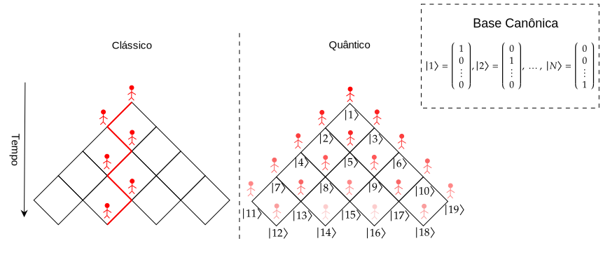
Caminhadas Quânticas
Motivação
Aplicações
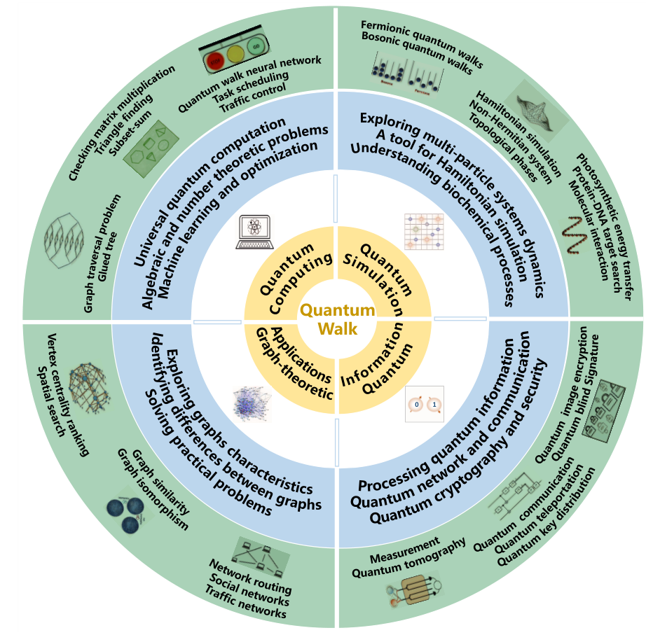
Fonte: Qiang, Ma, and Song (2024).1
Motivação
Trabalhos Relacionados1 2 3
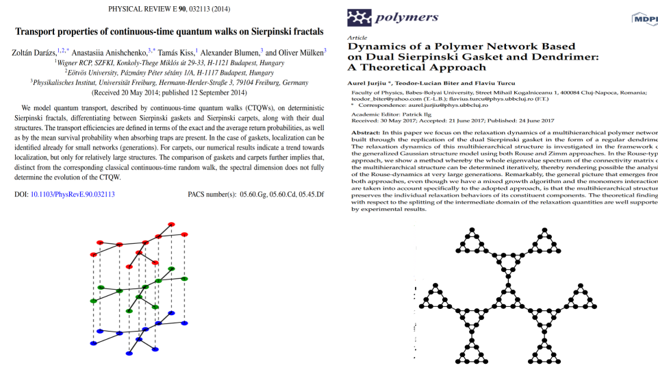
Motivação
Redes Multi-hierárquicas
Motivação
Objetivo Geral
- Avaliar a eficiência do transporte quântico na rede multicamada Dual Sierpinski Gasket replicado em forma de dendrímero (DSGRSD).
Objetivos Específicos
Determinar as probabilidade médias de retorno clássico e quântico.
Explorar como a conexão de mais camadas de dendrímeros influência na eficiência do transporte.
Comparar os resultados das medidas de probabilidade utilizando o espectro da matriz Laplaciana e os autovalores analíticos.
Grafos e Matriz Laplaciana
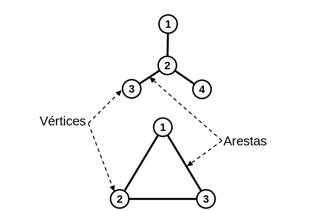
- Elementos da Matriz Laplaciana \(\mathbf{L}\)
\[\small L_{ij} =\begin{cases} \;\;k_i, & i=j, \\ -1,&\text{se } i \neq j \text{ e ocorrer ligação entre os vértices } i \text{ e } j ,\\ \;\;\;0,& \text{caso contrário}.\end{cases}\]
Obs.: também pode ser chamada de Matriz Conectividade \(\mathbf{A}\).
- Grafo Estrela
\[\mathbf{L}=\begin{pmatrix}1&-1&0&0\\ -1&3&-1&-1\\ 0&-1&1&0\\ 0&-1&0&1\\\end{pmatrix}\]
- Grafo Triangular
\[\mathbf{L}=\begin{pmatrix} 2&-1&-1\\ -1&2&-1\\ -1&-1&2\\\end{pmatrix}\]
Rede Multicamada DSGRSD
Dendrímeros
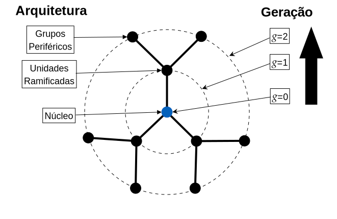
- Número total de nós:
\[N_d=3 \cdot(2^{g_d}-1)+1\]
Fractal Dual Sierpinski Gasket
- Número total de nós:
\[N_s=3^{g_s}\]
Rede Multicamada DSGRSD
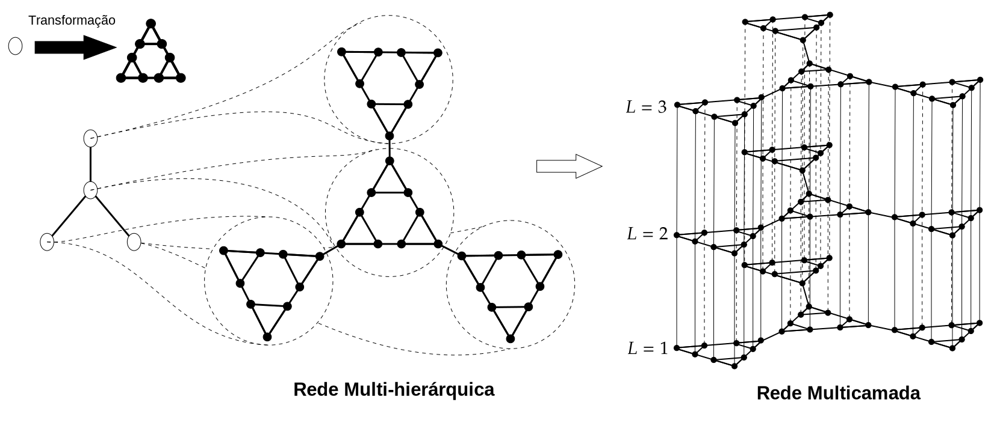
- Número de nós da Rede Multi-hierárquica
\[N=N_s\cdot N_d=3^{g_s}\cdot (3\cdot2^{g_d}-2)\]
- Número de nós da Rede Multicamada \[N_L=3^{g_s}\cdot (3\cdot2^{g_d}-2)\cdot L\]
Espectro de Autovalores
Matriz Laplaciana
\[L_{ij}\mathbf{w}_i=\lambda_i\mathbf{w}_i\]
\(\lambda_i \in \mathbb{R}\) e segue a ordem \(0=\lambda_1\leq\lambda_2\leq \dots\leq \lambda_{N}\)
\(\mathbf{w}_i\) é ortonormal
Rede Multicamada DSGRSD
\[\small\Lambda_j=2-2\cos\left(\dfrac{j\pi}{L}\right)+\lambda_i, \text{ para }j=0,1,2,\ldots,L-1 \text{ e } i=1,\ldots,N \]
Dendrímero
\[\small\lambda_k^{(s)}=3-2\sqrt{2} \cos(\psi_k),\text{ para }k=1,\ldots,g_d \text{ e } \psi_k\neq 0 \]
- Autovalores Não-degenerados (Simétrico)
\[\small -\sqrt{2}\sin[(g_d+1)\psi_k]=\sin(g_d\psi_k)\]
- Autovalores Degenerados (Assimétrico)
\[\small\sin[(g_d+1-m)\psi_k]=\sqrt{2}\sin[(g_d-m)\psi_k]\]
Fractal Dual Sierpinski Gasket
\[\lambda_{\pm}^{(g_d,g_s)}=\dfrac{5+\pm \sqrt{25-4\cdot\lambda^{(g_d,g_{s}-1)}}}{2}.\]
Medidas de Probabilidade
Caminhadas Aleatórias de Tempo Contínuo (CTRW)
- Probabilidade de Transição Clássica
\[\small p_{a,b}(t)=\sum_{n=1}^Ne^{- \lambda_n t}\langle b|w_n\rangle\langle w_n|a\rangle\]
- Probabilidade Média de Retorno Clássico
\[\small\bar{p}(t)=\dfrac{1}{N}\sum_{a=1}^Np_{a,a}(t)\]
\[\small \bar{p}(t)= \dfrac{1}{N}\sum_{n=1}^Ne^{- \lambda_n t}\]
- No limite ao longo do tempo
\[\lim_{t\rightarrow \infty}\bar{p}(t)=\dfrac{1}{N}\]
Caminhadas Quânticas de Tempo Contínuo (CTQW)
- Probabilidade de Transição Quântica
\[\small \pi_{a,b}(t)=\left|\sum_{n=1}^Ne^{-i\lambda_n t}\langle b|w_n\rangle\langle w_n|a\rangle\right|^2\]
- Probabilidade Média de Retorno Quântico
\[\small \bar{\pi}(t)=\dfrac{1}{N}\sum_{a=1}^N\pi_{a,a}(t)\]
\[\small\bar{\pi}(t)=\dfrac{1}{N}\sum_{a=1}^N\left|\sum_{n=1}^Ne^{-i\lambda_n t}\langle a|w_n\rangle\langle w_n|a\rangle\right|^2\]
\(\blacktriangleright\) Limite Inferior
\[\small|\bar{\alpha}(t)|^2=\left|\dfrac{1}{N}\sum_{n=1}^Ne^{-i\lambda_n t}\right|^2\]
- Valor Médio ao longo do tempo
\[\small\bar{\chi}\equiv\dfrac{1}{N}\sum_{a=1}^N\left[\sum_{n=1}^N\sum_{m=1}^N\delta_{\lambda_n,\lambda_m}|\langle w_n|a\rangle|^2|\langle w_m|a\rangle|^2\right] \begin{cases}\bar{\chi}=0, \text{ é eficiente}\\ \bar{\chi}=1, \text{ é ineficiente}\end{cases}\]
\(\blacktriangleright\) Limite Inferior
\[\small\bar{\chi}^*\equiv\dfrac{1}{N^2}\sum_{n=1}^N\sum_{m=1}^N\delta_{\lambda_n,\lambda_m}\begin{cases}\bar{\chi}^*=0, \text{ é eficiente}\\ \bar{\chi}^*=1, \text{ é ineficiente}\end{cases}\]
Procedimentos
Implementação Computacional
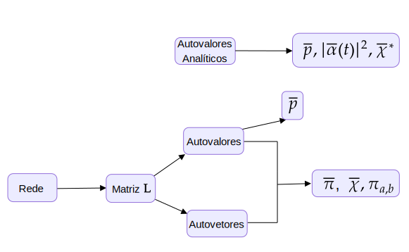
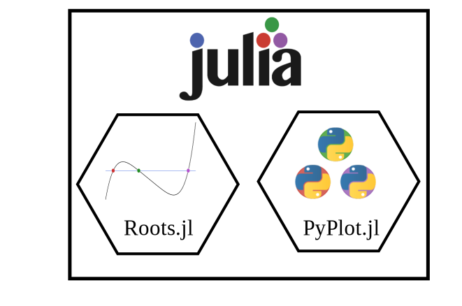
Gerações Escolhidas:
- \(g_s=3\), \(g_d=1\), \(L=1\)
- \(g_s=1\), \(g_d=3\), \(L=1\)
- \(g_s=1\), \(g_d=1\), \(L=3\)
- \(g_s=2\), \(g_d=2\), \(L=2\)
Procedimentos
Rotulação dos nós
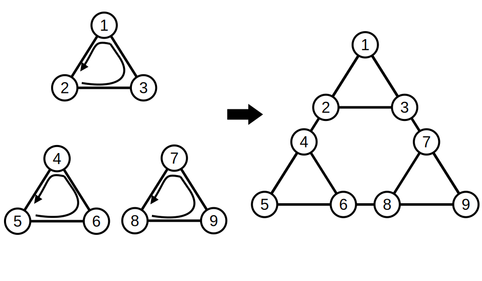
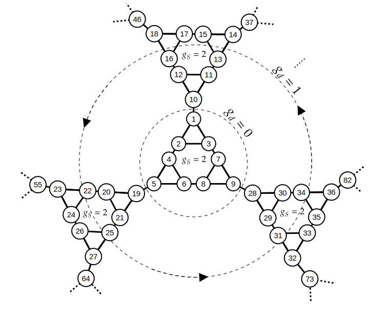
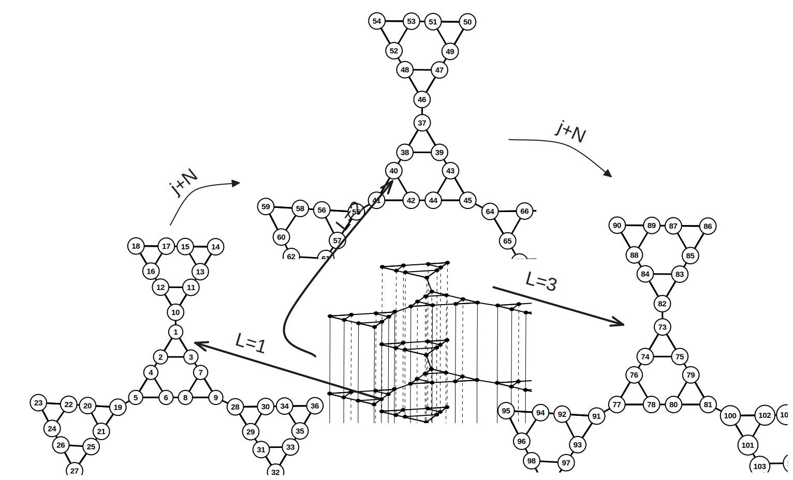
Resultados Parciais
Probabilidade de Transição Quântica
\(g_s=3\), \(g_d=1\) e \(L=1\) (Camada com 108 nós e o Fractal DSG com 27 nós).
Efeitos de localização nos Fractais e entre os nós que conectam as gerações.
Transporte quântico é melhor a partir do fractal central.
\(g_s=1\), $g_d=3 e \(L=1\) (Camada com 66 nós e o Fractal DSG com 3 nós).
- Efeitos de localização permanece.
\(g_s=1\), $g_d=1 e \(L=3\) (Camada com 12 nós e o Fractal DSG com 3 nós).
Efeitos de localização formam blocos e variam entre camadas interna e externa.
Nós superiores das gerações \(g_d>0\) são responsáveis pela propagação das camadas.
\(g_s=2\), $g_d=2 e \(L=2\) (Camada com 90 nós e o Fractal DSG com 9 nós)
- Simetria de Blocos.
- Propagação maior.
Resultados Parciais
Probabilidade Média de Retorno
Gráficos da probabilidade média de retorno \(\bar{p}(t)\) para uma caminhada aleatória clássica. No limite ao longo do tempo, a probabilidade decai no valor de equipartição \(1/N\), no qual o valor de \(N\) para as gerações (\(g_s=3\), \(g_d=1\), \(L=1\)), (\(g_s=1\), \(g_d=3\), \(L=1\)), (\(g_s=1\), \(g_d=1\), \(L=3\)), (\(g_s=2\), \(g_d=2\), \(L=2\)) serão respectivamente 108, 66, 36 e 180. A direta, temos os resultados oriundos dos autovalores da matriz Laplaciana e na esquerda são obtidos analiticamente.
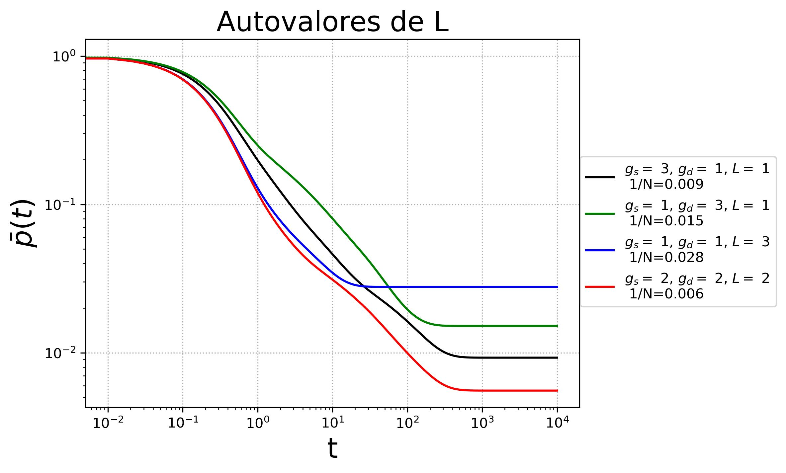
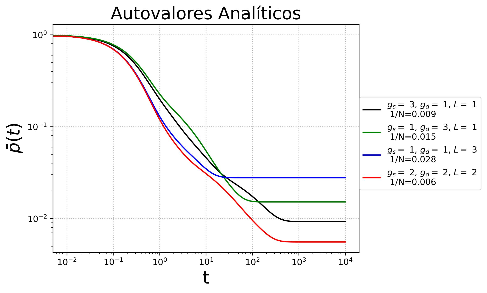
Gráficos da probabilidade média de retorno quântico \(\bar{\pi}(t)\) e seu limite inferior \(|\bar{\alpha}(t)|^2\).
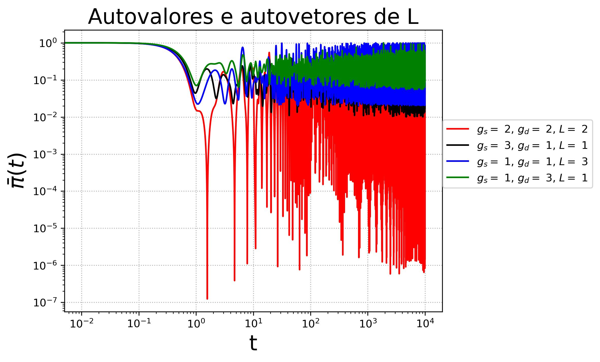
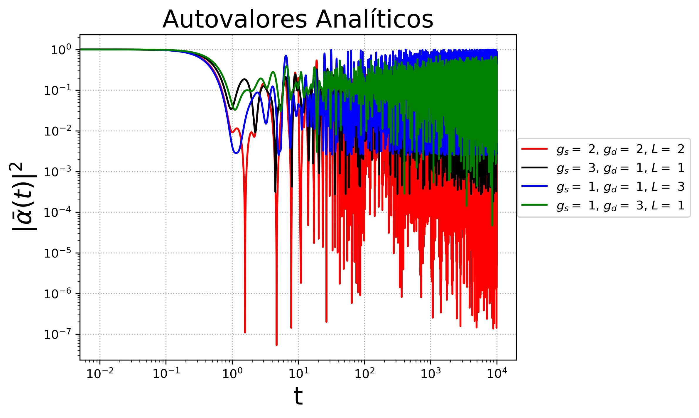
Resultados Parciais
Eficiência do Transporte
Representação gráfica do valor médio \(\bar{\chi}\) referente ao espectro da matriz Laplaciana e o limite inferior \(\bar{\chi}^*\) com os autovalores analíticos.
Resultados Parciais
Espectro de Autovalores
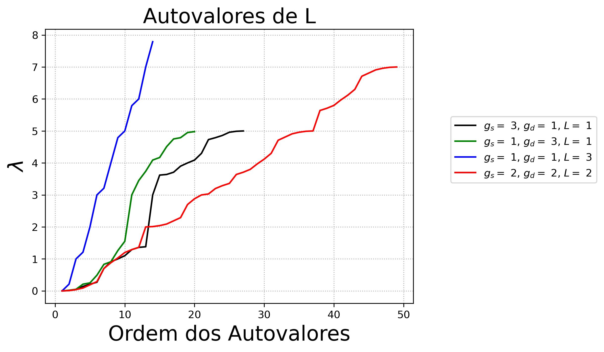
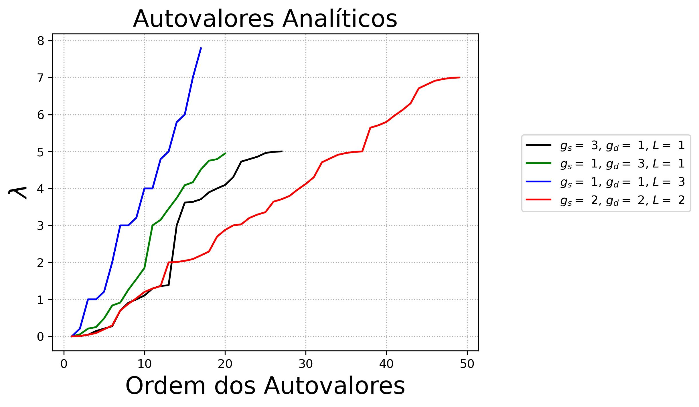
Considerações Finais
O aumento da geração do fractal é um fator determinante para a melhora dos transportes clássico e quântico.
A ordem da eficiência do transporte foram semelhantes no caso clássico e quântico.
A geração (\(g_s=2\), \(g_d=2\), \(L=2\)) teve o melhor transporte e (\(g_s=1\), \(g_d=3\), \(L=1\)) o pior.
A alta degenerecência do fractal contribuiu para que os limites inferiores se aproximem de \(\bar{\chi}\).
Mesmo com as variações dos autolovares da matriz Laplaciana e os analíticos, o desempenho de cada transporte foi semelhante.
Posteriormente, veremos os efeitos de localização através de \(\pi_{a,b}\) para redes maiores, e também, vamos avaliar se a remoção de arestas especificas entre as camadas melhoram o desempenho transporte.
Cronograma
2022 - 2º Semestre
- Aproveitamento de disciplinas, definição do tema e levantamento bibliográfico.
2023 - 1º Semestre
- Construção da matriz Laplaciana da rede multi-hierárquica. Exame e obtenção do certificado de proficiência. Disciplina cursada: Redes Complexas.
2023 - 2º Semestre
- Implementação dos autovalores analíticos numericamente. Escrita do Pré-projeto para Qualificação.
2024 - 1º Semestre
- Exame de qualificação.
2024 - 2º Semestre
- Verificação dos resultados. Submissão de artigo.
2025 - 1º Semestre
- Submissão de artigo e eventuais correções ou complementos para o texto final.
2025 - 2º Semestre
- Escrita do texto final da Tese de Doutorado.
2026 - 1º Semestre
- Defesa da Tese de Doutorado.